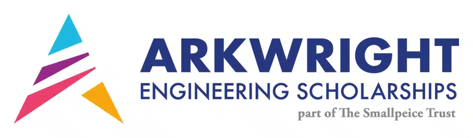
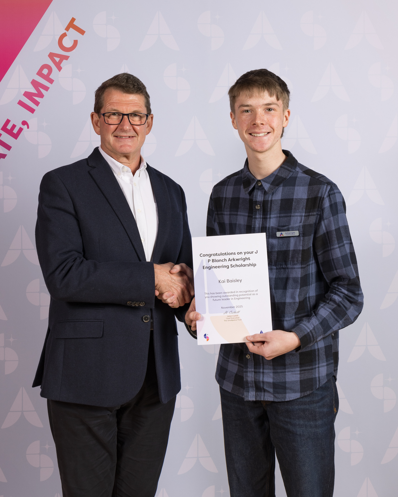

Arkwright Scholarship

This page celebrates my biggest achievement: earning the prestigious Arkwright Scholarship. It represents years of hard work, technical growth, and commitment to engineering.
Through Arkwright, I have been able to develop practical skills, improve my confidence in design and problem-solving, and push myself to a higher standard across my projects.
This award is not just a milestone for me, it is a foundation for what I want to achieve in the future.
I couldn't go without thanking Dr Elliott and everyone that helped me along the way and inspiring me to continue persuing engineering!
About my Arkwright Scholarship
The Arkwright Scholarship is a highly competitive award that recognizes outstanding achievement in engineering and technology. Earning this scholarship has been a dream of mine, and it validates the dedication and hard work I have put into my studies and projects.
My Arkwright project focused on improving the aerodynamics of the F24 car at my high school, a project that allowed me to apply engineering principles to a real-world problem. Through this project, I developed skills in research, design, testing, and analysis, which have been invaluable in my growth as an engineer.
To be awarded the Arkwright scholarship, i had to complete and submit a detailed project, which was then evauluated by a panel, passing that, i complted a university-style exam, focusing on degree level engineering principles. finally passing this, i was invited to partake in an interview, where i presented my project and answered questions about my engineering knowledge and aspirations. I am proud to have successfully navigated this rigorous process and to have been recognized for my efforts and potential in engineering.

Details behind the project
In my project i had to use real life engineering principles to improve and innovate the aerodynamics of the car. I had to research and apply principles like the drag equation to explain and justify my project to the panel of judges.
I had to design and test my project, using tools like CAD software to create detailed designs, and then building and testing prototypes to validate my ideas. This process allowed me to develop practical skills in design, fabrication, and testing, which have been invaluable in my growth as an engineer.
The drag equation, the most fundamental principle behing the project: D = Cd * A * .5 * r * V^2, where D is the drag force, Cd is the drag coefficient, A is the frontal area of the object, r is the density of the fluid (air in this case), and V is the velocity of the object relative to the fluid. By understanding and applying this equation, I was able to identify areas of improvement for the car's aerodynamics and implement changes that reduced drag and improved performance.
since we cannot change many elements of this equation, i had to focus on the drag coefficient and the area. reducing these values as much as possible reduced the drag acting on the car, improving our race performance.
View My Arkwright Project
You can view the full document below, or open it in a new tab.